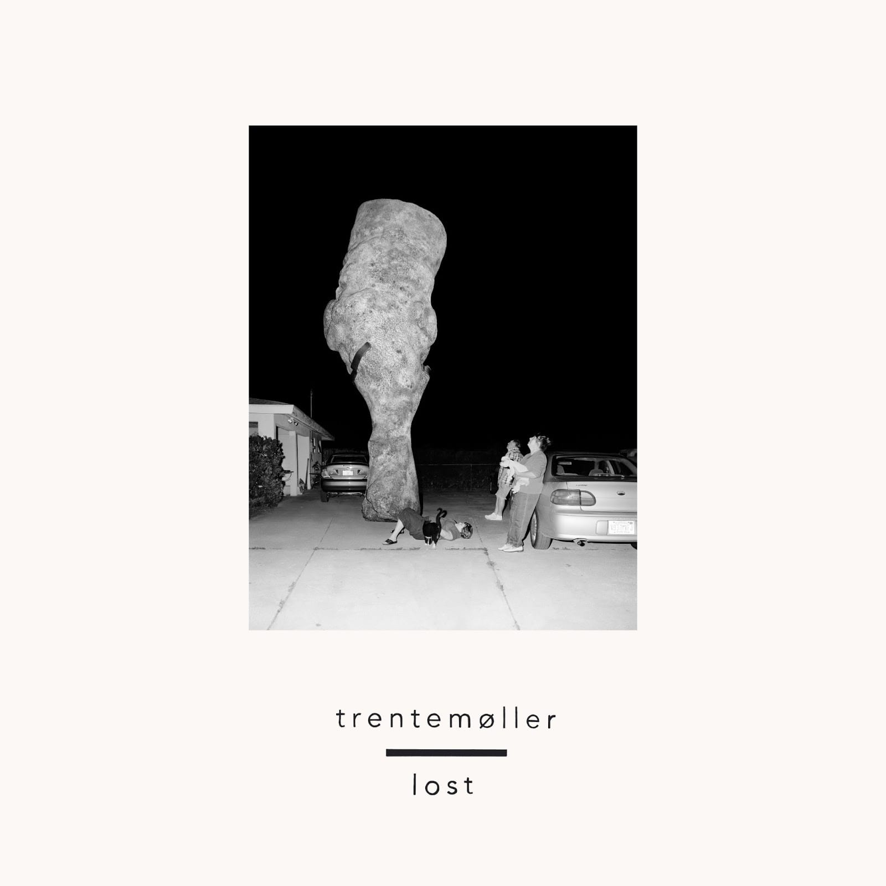

24 hours of happy
Фарелл Вильямс очень клевый!
Nils Frahm - Spaces (2013)
Шикарно!
R.I.P. TeamFeed
ДжетБрейнс недавно написал новое внутреннее приложение с блекджеком и шлюхами на замену моего (на 90-с-чем-то-там-процентов) Тимфида, поэтому я, посоветовавшись с остальными комиттерами, решил опубликовать его исходники.
Основная задача, которую должен был решить (и в каком-то смысле частично решил) Тимфид—это повышение коммуникации между сотрудниками JB. Штука, наподобие известного в узких кругах сервиса FriendFeed. Самое клевое, что я в нем сделал—полное отсутствие админки. У всех пользователей были совершенно равные права, и каждый мог приглашать новых пользователей. Ну и вообще, все было достаточно просто и аскетично. Вот.
Ну и немного бесполезной инфы:
- Основная часть ТимФида была написана мной (хотелось пошшупать GAE, да и раннюю версию ПайШарма) в течение отпуска. Кроме всего, в какой-то момент в проекте участвовали: Саша Зверев, который написал XMPP поддержку, Дима Чересов, который сделал форматтер, Саша Анисимов, который поправил верстку и стили под разные браузеры, что-то подкручивал еще Димка Жемеров, но я не помню что :) Спасибо им!
- За 3,5 года аптайма в тимфид было написано более 1500 сообщений, под которыми иногда возникал некислый срач, что, в итоге, дало нам под 8 тыс комментариев.
Кажется мне, что эксперимент, в общем, удался, так что ура, товарищи!
ps: я не большой знаток правильного оформления лицений (да и вряд ли исходники кому-нибудь окажутся полезными), но все же "можете пользоваться as is и никаких гарантий ни на что не даю". pps: на самом деле, это был ТимФид 2.0, а первый мы писали с Кириллкой, но наши взгляды разошлись, как в море корабли, так что мы его так и не выпустили :)
Booka Shade - Love Inc (Richie G Remix)
Отличный трек. Ну и оригинальный ничего так.
Rone - Tohu Bohu (2012)
Весь альбом приятный.
Trentemøller - Lost (2013)

Кайфовый альбом
Rachmaninoff Op. 3: II. Prelude, In C Sharp Minor performed by Emil Gilels
Невероятно!
Vasily
Nuance
edIT этот, чья музыка играет в бэке, один из мемберов The Glitch Mob, кстати. И весь альбом неплохой.